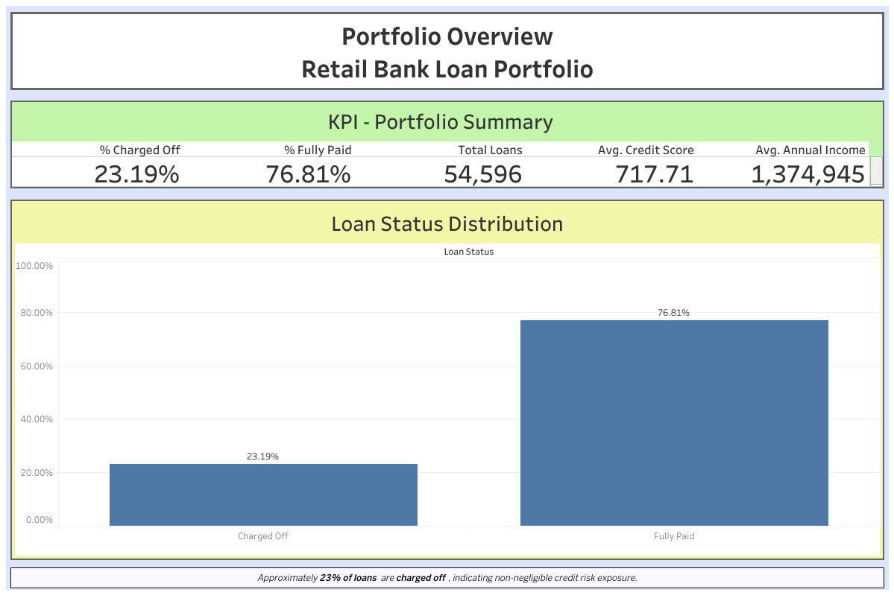
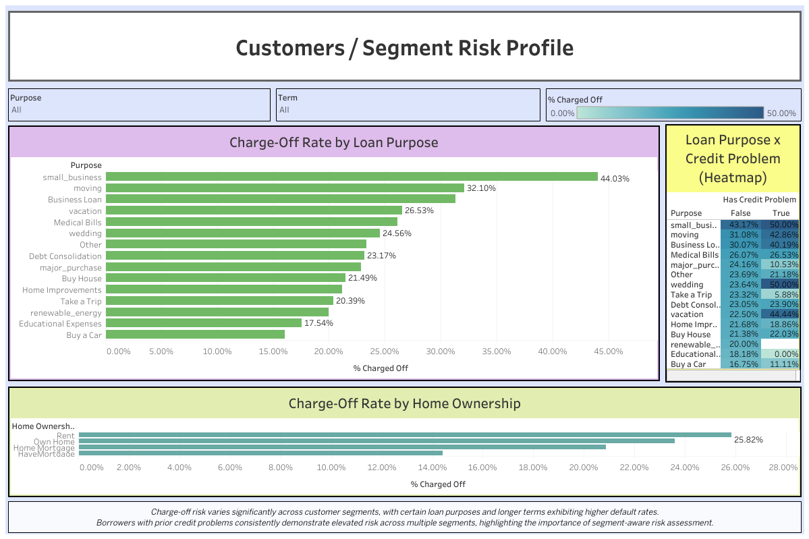

Bank Loan Portfolio Analysis
Borrower Risk Segmentation & Portfolio Monitoring
Borrower Risk Segmentation & Portfolio Monitoring
Understanding loan performance and borrower risk is critical for managing a bank’s credit portfolio.
This project analyzes loan outcomes and borrower characteristics to identify patterns associated with higher credit risk.
The workflow combines Python-based exploratory data analysis with interactive Tableau dashboards for business interpretation.
Interactive dashboard exploring borrower risk characteristics and credit factors.

High-level overview of loan portfolio performance, including distribution of loan outcomes and key portfolio metrics.

Segment-level analysis of loan risk across different customer groups and loan purposes.